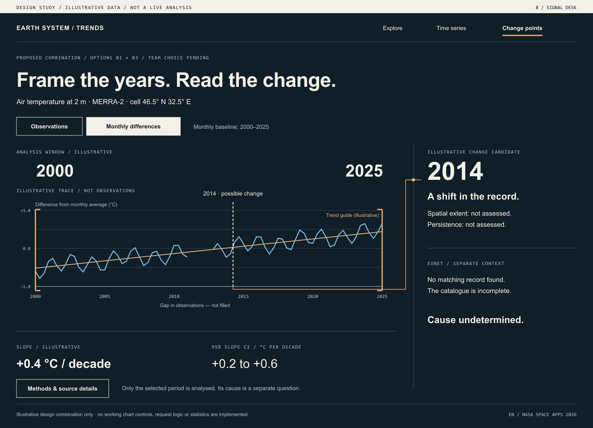
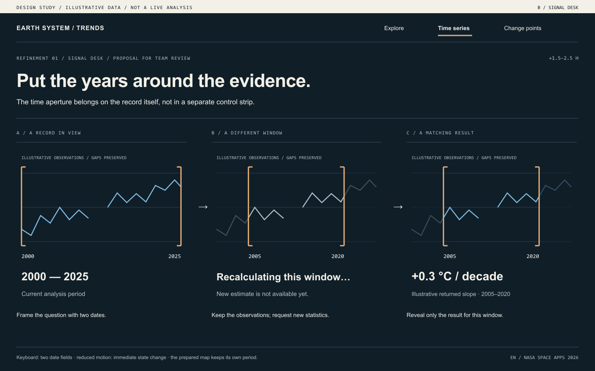
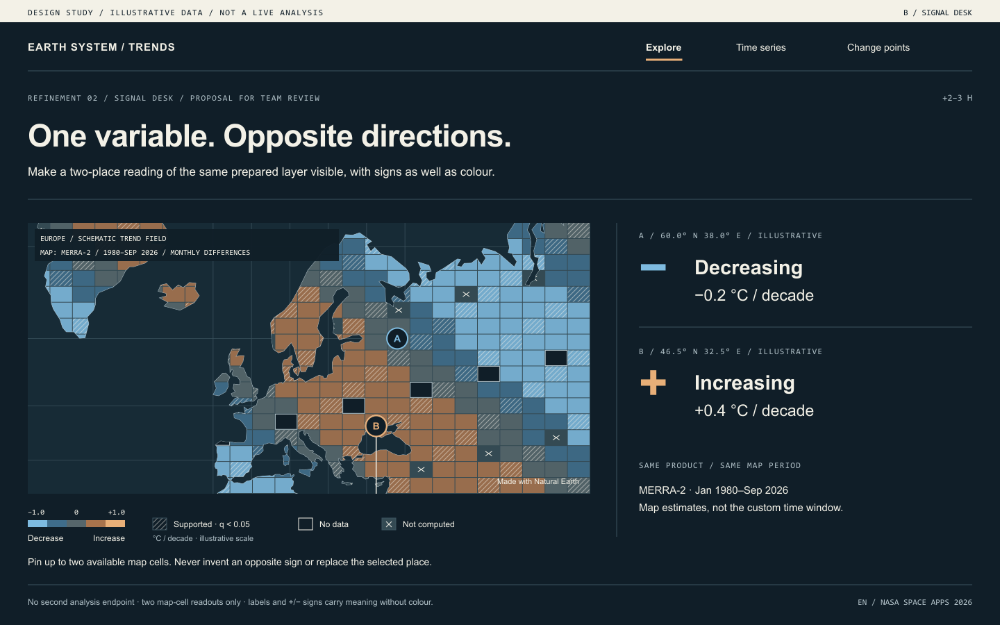
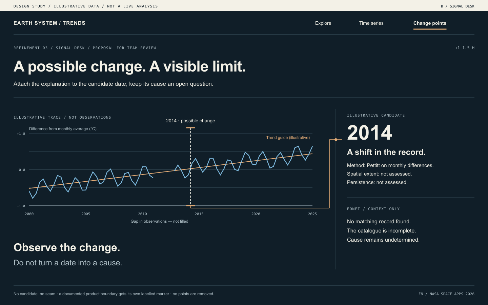
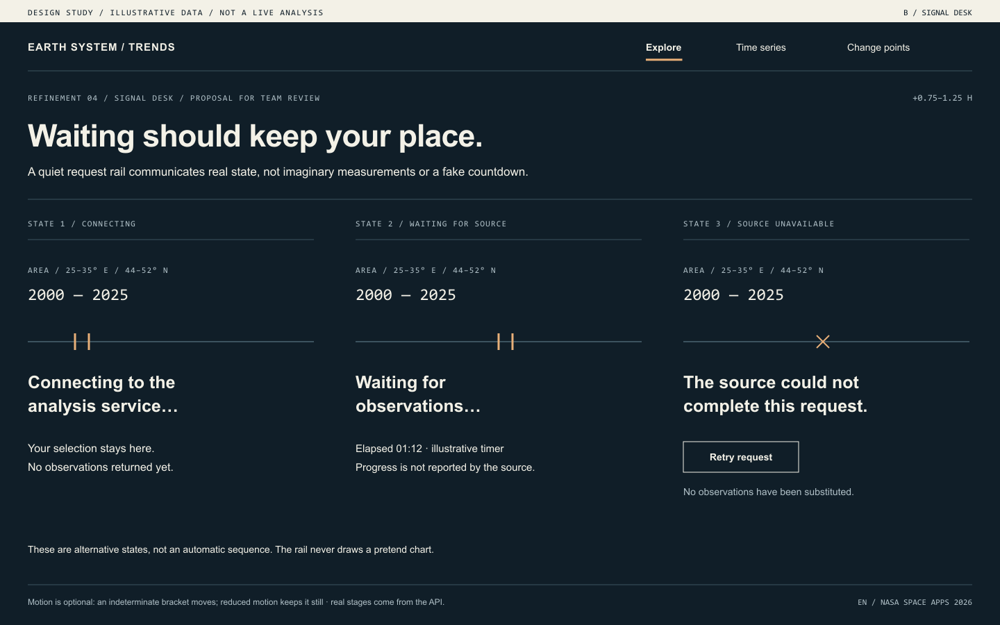
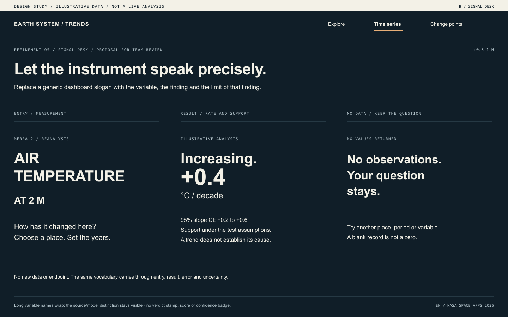

TASK 006 / SELECTED DIRECTION B / TEAM REVIEW
Signal Desk needs a moment
that belongs to the evidence.
Five independent refinements to the chosen direction. Each strengthens a different part of the existing journey. Choose one or two; none is implemented. Time estimates cover additional interface work, assuming the agreed data are available.
RECOMMENDATION / 01 + 03 / DECISION PENDING
Frame the years. Read the change.
Bring the time brackets onto the observed record and tie a possible break to its explanation. The same dark instrument gains two connected actions.

Full-size vector · PNG01 / Put the years around the evidence.
+1.5–2.5 hours
Dates frame the record itself. A changed period waits for matching statistics; observations remain intact and missing points stay missing.

Full-size storyboard02 / One variable. Opposite directions.
+2–3 hours
Pin two available cells from the same prepared map. Lettered pins, signs and labelled rates make the comparison visible without relying on colour. Two full analyses are outside this proposal.

Full-size sketch03 / A possible change. A visible limit.
+1–1.5 hours
A visible seam links the candidate date to its explanation. The line is not broken, points are not removed, and a detected change does not establish a cause.

Full-size sketch04 / Waiting should keep your place.
+0.75–1.25 hours
A restrained indeterminate bracket and real stage labels preserve the question. Connecting, waiting and failure remain different; the three frames are state examples, not an automatic progress sequence.

Full-size state study05 / Let the instrument speak precisely.
+0.5–1 hour
Name the measurement, separate a rate from its statistical support, and keep a missing record distinct from zero. The new voice is direct rather than playful.

Full-size voice study